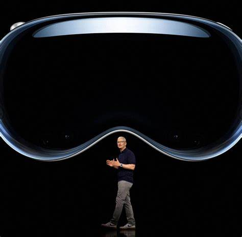

What is it?
Apple Vision Pro is an innovative device from Apple designed to enhance the experience of mixed reality. It uses advanced technologies such as artificial intelligence and advanced sensors to create unique visual and audio effects, immersing the user in a whole new world of virtual experiences.
Mixed reality is a combination of virtual (completely replacing the view of the surrounding world with a digital one using virtual reality glasses) and augmented (adding digital objects to the physical world through virtual reality glasses) realities. In this product from Apple, they figured out how to use ordinary gestures to change these realities among themselves and work in them.
Apple Vision Pro is designed to improve learning, entertainment, creativity and communication. It can be used to create amazing visuals, interactive learning experiences, augmented reality games, and improve workflows and productivity.
Apple Vision Pro users can enjoy unique virtual worlds, communicate with other users in a virtual space, create and edit content using specialized applications, and much more. This device opens up new horizons for us to interact with information and the world around us, making our lives more interesting and rich.